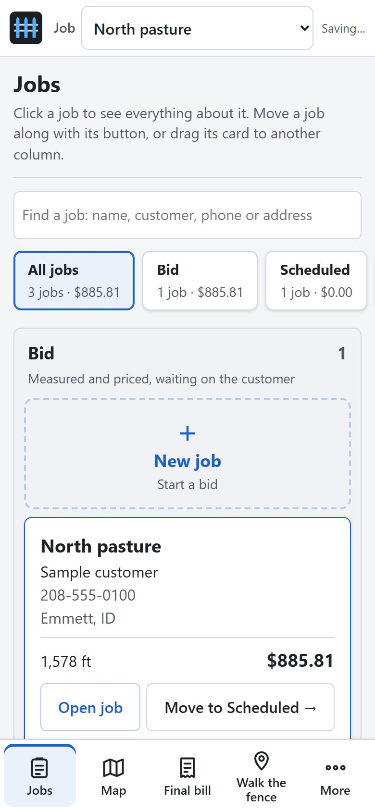
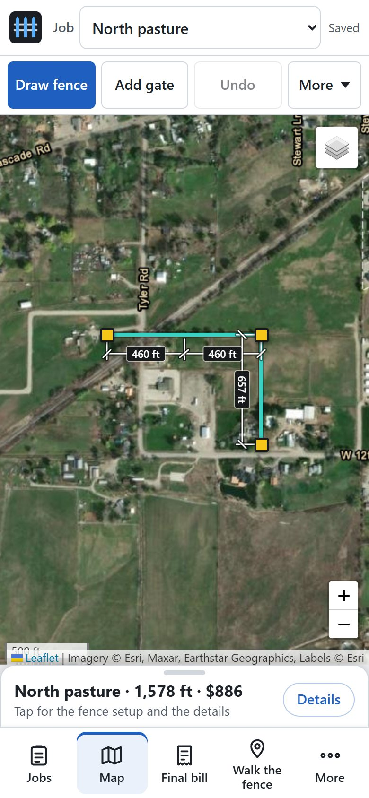
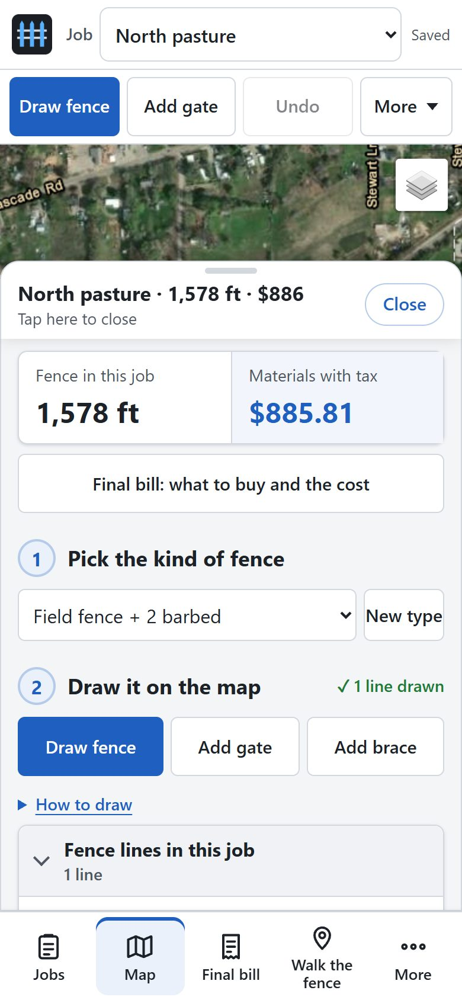
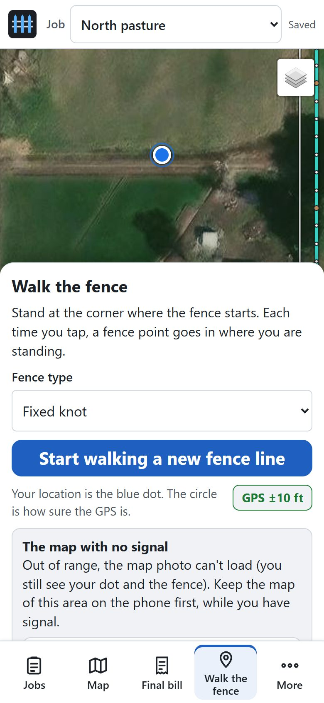
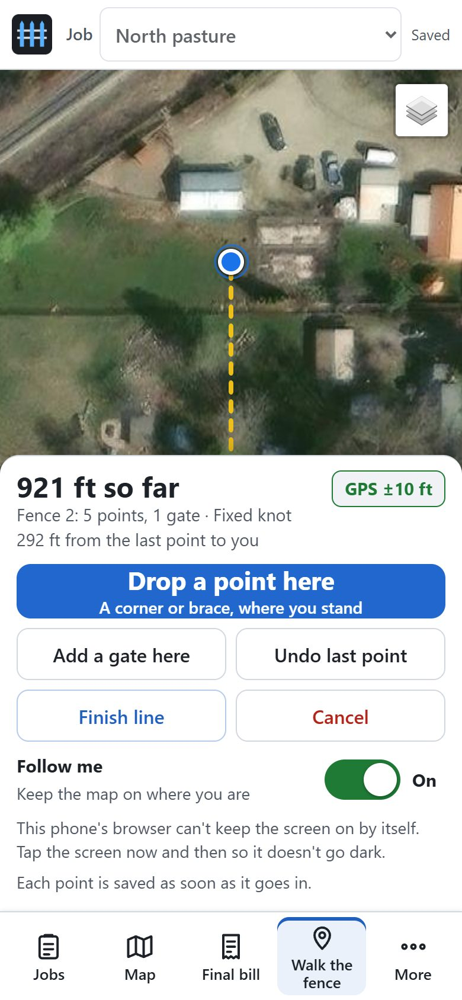
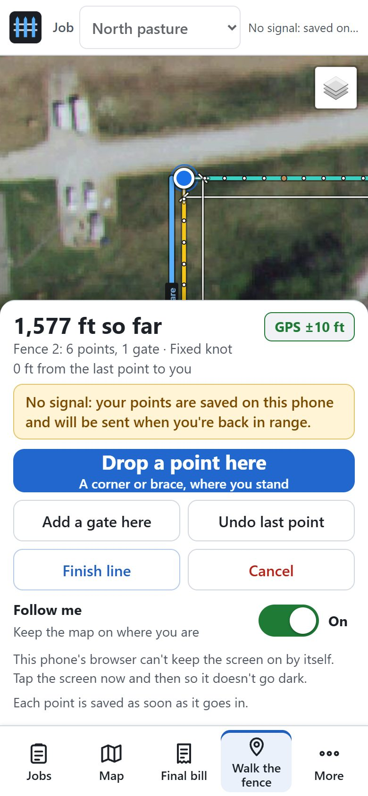
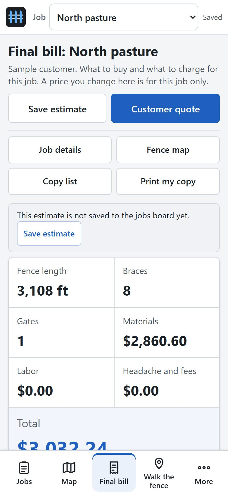
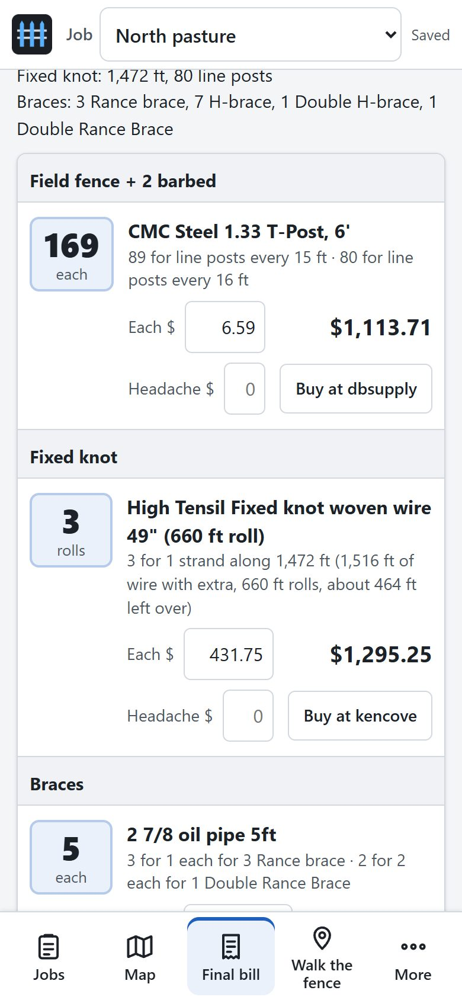

What the website looks like on a phone (390 × 844, an iPhone-sized screen), on sample jobs near Emmett.
The bar at the bottom has the pages that matter out on a job. "Walk the fence" puts a fence point where you stand,
from the phone's GPS, and keeps working with no signal.

JobsOne list of big cards, by stage. Tap a job to open it.

MapThe map fills the screen. The bar at the bottom says the fence and the price.

Map, details openTap the bar and the fence setup slides up. Tap it again to put it away.

Walk the fencePick the fence type, keep the map for no signal, and start.

WalkingTap "Drop a point here" at each corner. Gates take two taps, one at each post.

No signalThe points are kept on the phone and sent once back in range. The kept map still shows.

Final billThe totals up top, big.

What to buyOne row each: how many, what it is, the price.